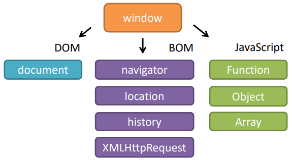
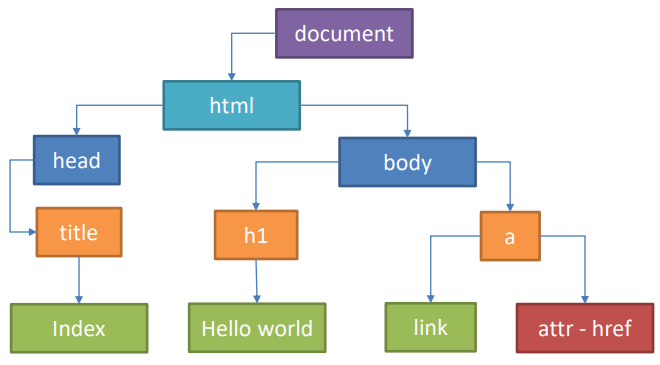
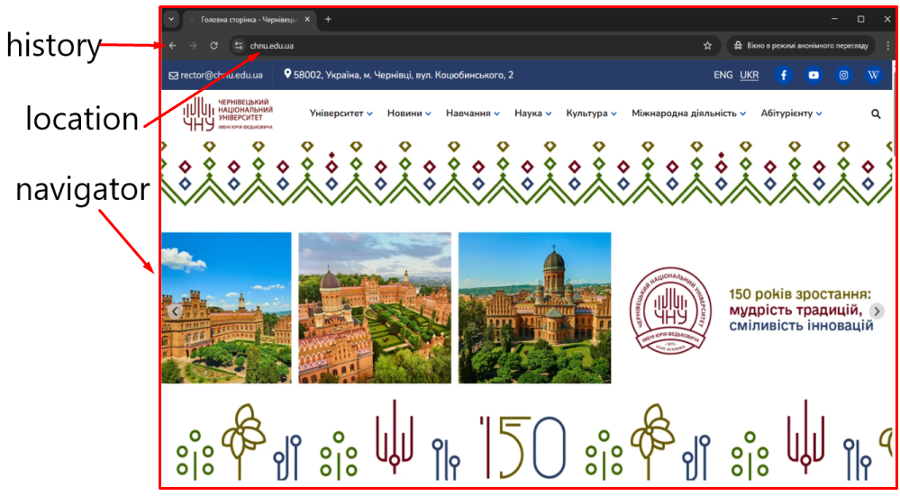
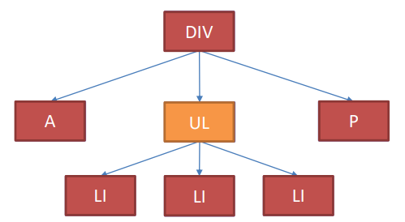
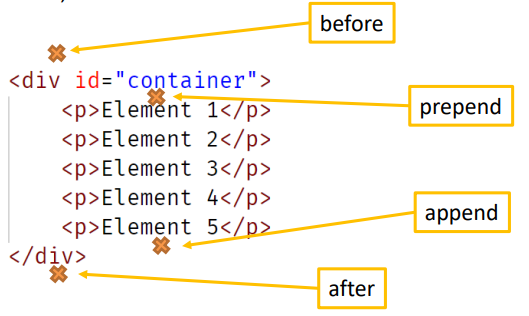
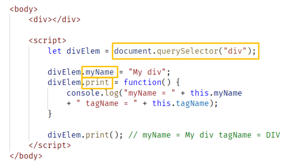
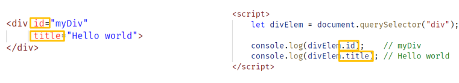
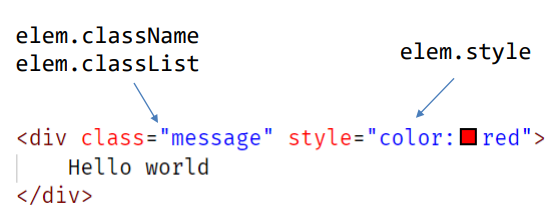
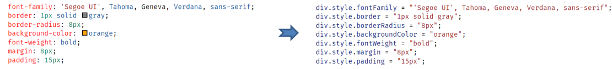
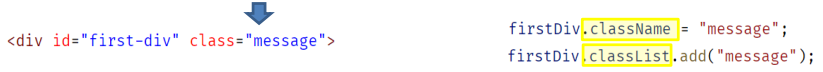

Тема 1. DOM (Document Object Model)
Тема 1. DOM (Document Object Model)
- DOM і пошук елементів
- Навігація по DOM елементам
- Зміна DOM дерева
- Властивості та атрибути
- Стилі
Браузерне середовище
Середовище - функціональність, яка надається середовищем, що виконує JavaScript код.
Наприклад, веббраузер надає функціональність для роботи з вебсторінкою, Node.js дає
доступ до ресурсів сервера тощо.

window
- глобальний об'єкт - представляє
змінні та функції, доступні в будь-якій
частині сценарію.
window.alert(“hello”); alert(“hello”)
DOM
DOM (Document Object Model) - об'єктна модель документа, яка будується на основі HTML
коду. Об'єктна модель має деревоподібну структуру і її можна змінювати за допомогою JavaScript
коду. Специфікація DOM https://dom.spec.whatwg.org/
document - об'єкт, який дає змогу отримати доступ до DOM

BOM
BOM (Browser Object Model) - об'єктна модель браузера, для роботи з різною функціональністю,
за винятком роботи з документом. BOM є частиною специфікації HTML.

Пошук елементів (getElement*, querySelector*)
- querySelectorAll(сss_selector) - пошук усіх елементів, що
підходять під
CSS селектор
- querySelector(css_selector) - пошук першого елемента по CSS
селектору
- document.getElementById(id) - пошук по ID
- document.getElementsByName(name) - пошук по атрибуту name
- document.getElementsByTagName(tag) - пошук по імені тегу
- document.getElementsByClassName(cssClass) - пошук по імені класу
- closest - виконує пошук найближчого батьківського елемента, що відповідає
CSS селектору. Якщо батьківський елемент не знайдено - повертає null.
Пошук елементів (getElement*, querySelector*)
Приклади у директорії - 01-dom-and-element-search
Навігація по елементам DOM
DOM (Document Object Model) – об’єктна модель документа, об’єктна модель документа, яка побудована на
основі коду HTML.
Кожен HTML-тег, атрибут, текст, коментар є об’єктами в DOM-дереві, якими можна
отримати доступ за допомогою коду JavaScript.
Існує 12 типів вузлів DOM:
- ELEMENT_NODE – елементи, наприклад p, div
- ATTRIBUTE_NODE – атрибути елементів
- TEXT_NODE – текст всередині елементів
- COMMENT_NODE - коментарі
- DOCUMENT_NODE – веб-сторінка
- DOCUMENT_TYPE_NODE - !DOCTYPE html
- PROCESSING_INSTRUCTION_NODE – вбудовані
інструкції для спеціальної програми
- CDATA_SECTION_NODE –
- DOCUMENT_FRAGMENT_NODE – вузол без
батька для завдань редагування дерева
- ENTITY_REFERENCE_NODE, ENTITY_NODE, NOTATION_NODE – застарілі
Властивості вузлів
nodeType - тип DOM вузла
Значення:
1 - елемент
3 - текстовий вузол
8 - коментар
innerHTML - вміст елемента
outerHTML - вміст елемента і сам елемент
data - вміст текстових вузлів і вузлів-коментарів. Працює так само innerHTML для
елементів
textContent - надає доступ до тексту
елемента, виключаючи всю розмітку. Під час виведення
на сторінку тексту, введеного користувачем,
безпечніше використовувати цю властивість, ніж
innerHTML
hidden - вказує на те, бачимо елемент чи ні
Навігація по DOM дереву
- children
- firstElementChild
- lastElementChild
- nextElementSibling
- previousElementSibling
- parentElement
Усі ці методи виконують навігацію тільки вузлами елементам

Методи childNodes, lastChild, firstChild, previousSibling, nextSibling,
parentNode працюють так само, але дають можливість
взаємодіяти з будь-яким вузлом DOM дерева
Навігація по DOM дереву
Методи для отримання вузлів (надають до будь-якого вузла дерева):
- childNodes – повертає всі дочірні вузли для вузла, у якому здійснюється виклик.
Якщо вузол не має дочірніх вузлів, повертає порожню колекцію.
- lastChild – повертає останній дочірній вузол для вузла, на якому відбувся виклик
методу. Повертає null, якщо немає дочірніх вузлів.
- firstChild – повертає перший дочірній вузол для вузла, у якому відбувся виклик.
Повертає null, якщо немає дочірніх вузлів.
- previousSibling – повертає попередній вузол, розташований на одному рівні, якщо
такий є. Повертає null, якщо вузол є першим у вказаному батьку.
- nextSibling - повертає наступний вузол, розташований на одному рівні, якщо такий
є. Повертає null, якщо вузол є останнім у вказаному батьку
- parentNode – повертає батьківський вузол. Типи вузлів Document та DocumentFragment
можуть мати батьків – у разі повертається значення null.
Навігація по DOM дереву
Методи отримання вузлів елементів (повертають лише елементи типу ELEMENT_NODE):
- children – повертає всі дочірні елементи для елемента, на якому виготовляється
виклик. Якщо елемент не має дочірніх вузлів, повертає порожній масив.
- lastElementChild – повертає останній дочірній елемент для вузла, на якому
стався виклик. Повертає null, якщо немає дочірніх елементів.
- firstElementChild – повертає перший дочірній елемент для вузла, на якому відбувся
виклик. Повертає null, якщо немає дочірніх елементів.
- previousElementSibling – повертає попередній елемент, розташований на одному
рівні, якщо такий є. Повертає null, якщо елемент є першим у вказаному
батьки.
-
nextElementSibling – повертає наступний елемент, розташований на одному рівні,
якщо такий є. Повертає null, якщо елемент є останнім у вказаному
батьки.
-
parentElement – повертає батьківський елемент. Якщо у вузла немає батьківських вузлів
або якщо батьківський вузол не є типом NODE_ELEMENT, повертається значення null.
Навігація по DOM дереву
Приклади у директорії - 02-dom-navigation
Зміна DOM дерева - створення вузлів
document.createElement(tag) – створення нового елемента, зазначеного в параметрах.
document.createTextNode(text) – створення текстового вузла.
Для того, щоб створені елементи стали видимими, їх
необхідно додати документ.
Методи вставки:
- node.append(новий_вузол)
- node.prepend(новий_вузол)
- node.before(новий_вузол)
- node.after(новий_вузол)
- node.replaceWith(новий_вузол)

Зміна DOM дерева - видалення/клонування вузлів
node.remove() – видаляє вузол, на якому викликаний метод із DOM дерева.
При переміщенні елемента в інше місце видаляти його зі строго не потрібно.
Методи вставки видаляють вузли зі старих місць.
node.cloneNode(true/false) – створення поверхневої або глибокої копії вузла, на якому був
здійснено виклик.
Зміна DOM дерева
Приклади у директорії - 03-dom-tree-modification
Властивості та атрибути - DOM властивості
Вузол DOM – звичайний об'єкт JavaScript. Для DOM вузлів можна надавати нові властивості та методи.

Властивості та атрибути - HTML атрибути
При парсингу HTML розмітки, на основі тегів створюються об'єкти, а значення стандартних атрибутів
надаються відповідним властивостям створених об'єктів.

Список стандартних атрибутів елементів описується в специфікації.
Якщо атрибут не є стандартним, його не можна отримати за допомогою властивості.
Властивості та атрибути - робота з атрибутами
- element.hasAttribute(ім'я_атрибута); - Перевірка наявності атрибуту
- element.getAttribute(ім'я_атрибута); - Отримання значення атрибуту
- element.setAttribute(ім'я_атрибута, значення_атрибута); – встановлення значення атрибуту
- element.removeAttribute(ім'я_атрибута); - Видалення атрибуту
Дані методи працюють із вмістом HTML розмітки.
Атрибути HTML мають дві особливості: їх вміст – строкове значення, імена атрибутів реєстронезалежні
Властивості та атрибути - атрибути
Між атрибутами та властивостями відбувається автоматична синхронізація.
якщо змінити атрибут, зміниться значення якості
якщо змінити властивість, зміниться значення атрибуту
Винятком є властивість та атрибут value для елемента input. Якщо змінити атрибут, значення
зміниться, але з навпаки.
Властивості DOM типізовані, наприклад, властивість
checked елемента input типу Boolean.
Властивості та атрибути - нестандартні атрибути
Атрибути, що починаються з префікса data- є користувальницькими і зарезервовані для
використання розробником.
Атрибути data-* доступні через властивість dataset елемента.
Якщо атрибут складається з декількох властивостей у dataset, він потрапляє перейменованим з
використанням camelCasing.
data-report-month в dataset буде властивістю reportMonth
Зазвичай нестандартні атрибути використовуються для передачі даних в JavaScript код.
Зміна DOM дерева
Приклади у директорії - 04-props-and-attributes
Стилі в JavaScript
Для оформлення HTML елементів можна використовувати два підходи:
- Використовувати inline стилі, задані через атрибут style
- Визначати стилі за допомогою CSS правил та CSS класів

Властивість style

Якщо CSS властивість використовує префікс, то JavaScript коді така властивість перейменовується з
використанням camelCasing.
Якщо ім'я CSS властивості починається з префікса, використовується PascalCasing
Робота з CSS класами

Методи об'єкта classList:
- add - додати клас, до вже наявних
- remove – видалити клас
- toggle – додати, якщо класу немає, видалити якщо клас є
- contains – перевірка наявності вказаного класу у списку класів
Стилі в JavaScript
Приклади у директорії - 05-styles
Контрольні питання
- Що таке середовище?
- Що таке DOM?
- Що таке BOM?
- Як знайти всі елементи p у поточному документі, назвіть усі можливі варіанти?
- Як знайти елемент у поточному документі з атрибутом href?
- Як здійснити пошук найближчого батьківського елемента?
- Скільки є типів вузлів?
- З якими типами вузлів доводиться найчастіше працювати?
- У чому різниця між методами першої elementChild і firstChild?
- У якому разі метод firstChild поверне значення null?
- Коли parentNode може повернути значення null?
Контрольні питання
- Як динамічно додати об'єкт на сторінку?
- Які методи розміщення створеного вузла в DOM дереві?
- Як видалити вузол зі сторінки?
- Що станеться, якщо параграф, розміщений на початку сторінки, знайти та додати до
кінець документа?
- Що таке поверхнева копія, що таке глибока копія
- Як зіставляються елементи та атрибути HTML з об'єктами?
- Перерахуйте методи роботи з атрибутами.
- Який елемент та який його атрибут не синхронізуються, коли відбувається зміна
значення якості, відповідний атрибут не змінюється?
- Для чого використовуються атрибути з префіксом data-*?
- Яким чином можна отримати доступ до атрибуту data-my-attribute?
Контрольні питання
- Чому краще використовувати CSS класи, а не окремі стилі CSS?
- У чому різниця між властивостями className та classList?
- Як імена CSS властивостей, у яких є дефіси, використовуються разом із властивістю
style?
- Як написати код, який додасть CSS клас, якщо в елементі такого класу немає, або
видалити CSS клас, якщо в елементі такий клас вже є?
- Що таке обчислені стилі та як їх отримати?